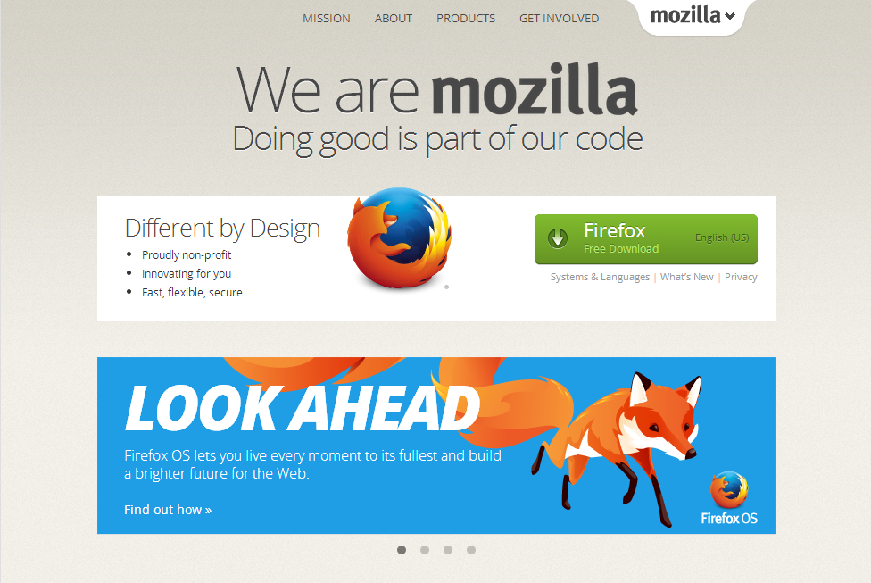
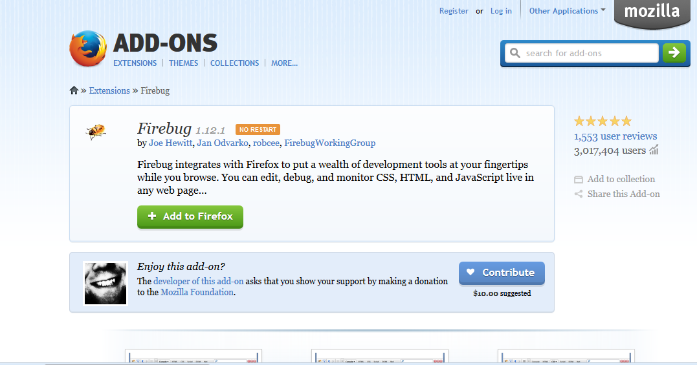
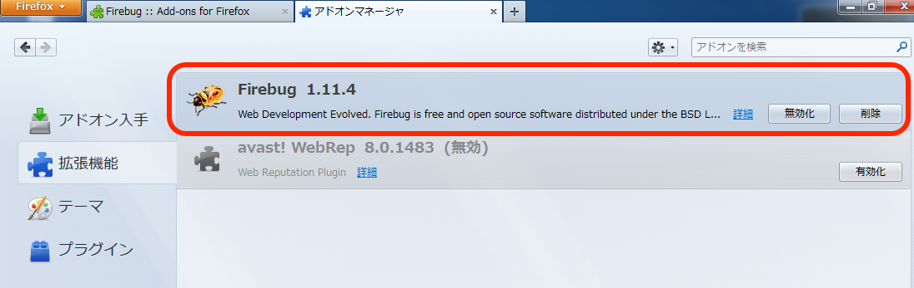
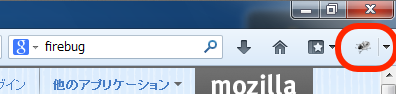
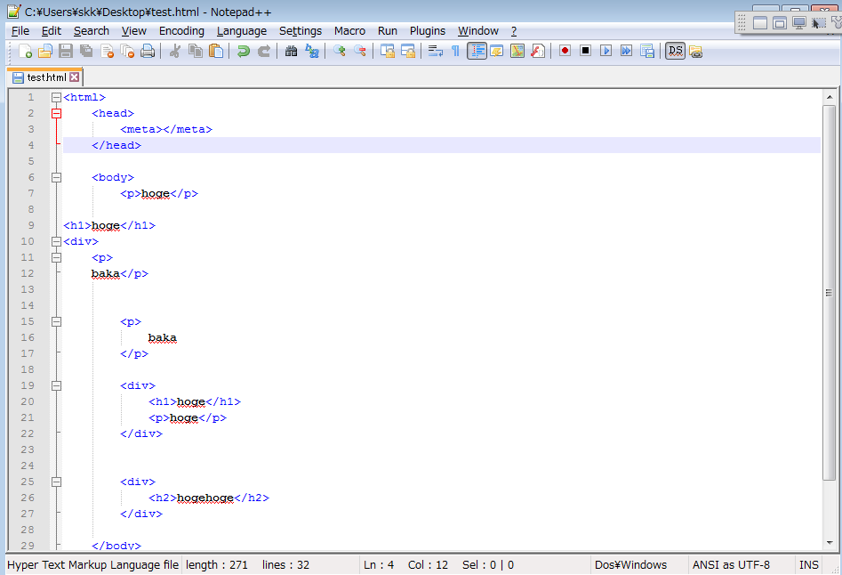

Setting up Development Environment on Your Own PC/Mac
This lecture assumes that you create web pages on SFC's Mac. However, you will want to do programming and web development on your own machine. This tutorial introduces how to setup development environment on your PC or Mac.
Note that this tutorial is not for all classes. CNS consultant does not know the contents of this tutorial. In addition, some teachers do not recommend setting up and use your own environment. Please ask for your teacher if you needed.
Windows
In this section, we introduce how-tos for Windows environment. The OS version is Windows 7. Probably, other version will also work.
Installing Firefox and setting up Firebug
This lecture recommend using Firefox. You can develop using some other browsers, like Internet Explorer or Google Chrome. However, support of some CSS properties differs on each browsers. If you want to avoid confusion by the difference, we recommend to use Firefox. You can download Firefox from Firefox web page.
Next is installing Firebug. You can also find similar functionality within other browsers. However, the course material is based on Firebug, it is recommended to install Firebug.
Visit Firebug installation page using Firefox, and click "Add to Firefox" button, then follow the instruction as displayed.
Click Firefox menu button on the top-left corner, and select Add-on, then select Extensions. If installation is completed, you can find Firebug in the list. If disabled, enable it.
If Firebug is enabled, you can find a bug on the top-right corner of Firefox window.
Installing Text editor (Notepad++)
A text editor used in CNS machines is mi. However, Windows version is still under development (alpha version), and it is not so popular in Windows. So let's install Notepad++ for your machine. (Note that in Japanese version of this tutorial, TeraPad is introduced. It is a good editor, but only Japanese version exists. So, here, we introduce Notepad++.) Since Notepad++ is a popular text editor, you can find usage information in the Internet a lot.
From a download page of Notepad++ web page, download the exe file, and double click it. After some instructions, you can start to use Notepad++.
A usage of Notepad++ is very similar to mi.
Connecting with CNS Environment
Now you can develop web pages using your machine. When you develop web pages on your machine, you would need to send HTML/CSS files to CNS environment. We introduce SSHFS, which you can put and get any files to and from CNS environment.
Mac Environment
In this section, we introduce how-tos for Mac environment. Since you would be used to Mac environment, we don't describe detailed information about each application.
Installing Firefox and Setting Up Firebug
Please refer to the above Windows instructions. Make sure that if Firebug is enabled.
Installing Text Editor (mi)
You can use mi, which is a same text editor at CNS environment. Go to mi's web page, download and install the latest version. It is recommended to add mi to Dock, then you launch mi easily.
Connecting with CNS
Now you can develop web pages using your machine. When you develop web pages on your machine, you would need to send HTML/CSS files to CNS environment. We introduce SSHFS, which you can put and get any files to and from CNS environment.